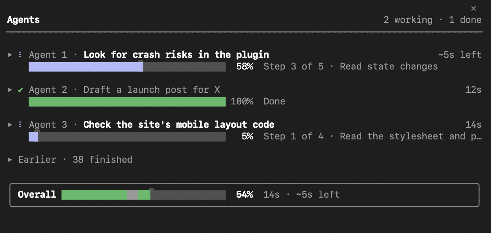

What's new in 1.1
A cleaner look, better time estimates and less clutter.
1.0First release

1.1Today

Simple two-line cards. What it's on, the step it's at and the time, easy to read at a glance.
Better time left. Shown after an agent finishes its first step, counting down at its own pace.
Earlier agents fold away. The table shows what's happening now.
A done notice and settings. Turn each part on or off in /config.
/progress, anytime. Runs even while Claude is busy, and shows the bars right in the chat.